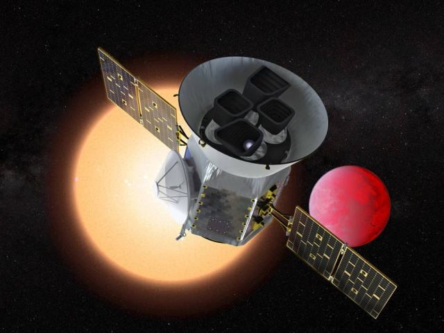

Űrszondák
A világűr csak felfedezésre vár
-
Parker Solar Probe
Az első űreszközünk, amely egy élő személyről, Eugene Parker asztrofizikusról kapta a nevét. Az űrszondát a Nap közelébe a Vénusz segítségével, hintamanőverekkel juttatjuk el, hét megközelítés során egyre közelebb kerülve az égitesthez. A legnagyobb megközelítés alkalmával mintegy 6 millió km-re lesz a Nap felszínétől (ez a Nap sugarának kb. 4-szerese). A szonda 11 cm vastag és 2,4 m átmérőjű szén-kompozit hővédő pajzsának ki kell bírnia az 1400 °C fokos hőmérsékletet és a Nap közelségéből adódó rendkívül erős sugárzást. A szondát érő sugárzás itt kb. 500-szor erősebb, mint ami a Föld körül keringő szondákat éri. A szonda tömege 612 kg. A szonda energiaellátását folyadékhűtésű napelemmel oldjuk meg, amit a hővédő pajzs mögé lehet mozgatni, ha a sugárzás túl erős lenne. A kutatókat hosszú ideje foglalkoztatja két kérdés a Nappal kapcsolatban, amikre eddig nem találtak választ: a napkorona túl magas hőmérséklete és a napszél felgyorsulása. Mi ezekre próbáljuk megtalálni a választ!

-
TESS
Az új kutatószonda az egész égboltot vizsgálja majd, hogy az éjjeli égen legfényesebbnek látszó néhány százezer csillag körül bolygókat találjon. Az idegen bolygók kimutatása a már jól bevált fényességméréssel történik: a TESS fedélzetén működő detektorok a csillagok fényességét mérik, és azt az átmeneti elhalványodást keresik, ami olyankor következik be, amikor a csillag körül keringő bolygó éppen a csillag előtt halad át. Ezzel az ún. tranzitmódszerrel – főként a Kepler űrtávcsővel – már körülbelül 3000 csillagnál találtak körülötte keringő bolygóra utaló fényességcsökkenést az elmúlt években. A TESS várhatóan legalább ugyanennyit fog felfedezni kétévesre tervezett működése során. Az újonnan észleltek között remélhetőleg több olyan bolygó is lesz, amely méretét és tömegét tekintve a Földhöz hasonlít, és a csillagától olyan távolságban kering, hogy akár élet is kialakulhatott rajta.
